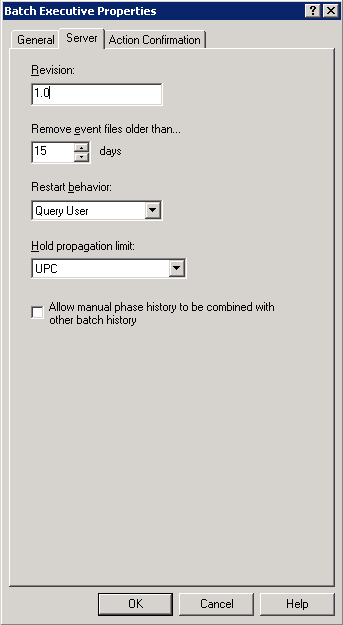

Set up a workstation to run Batch Executive
- In DeltaV Explorer, select System Configuration/Physical Network/Control Network, and then click the + next to the workstation name.
- Select and right-click Batch Executive, and then select Properties from the context menu.
- On the General tab of the Properties dialog, click Enabled to enable this workstation for batch. You will be reminded that you will need to download the workstation.
-
Fill in the fields on the Server tab as follows:
- Revision - leave as is
- Maximum event file age - 15
- Restart behavior - Query User
- Hold propagation limit - UOP (operation level)
- Allow manual phase history to be combined with other batch history - leave as is
-
Click OK.

- Download the workstation.